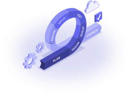
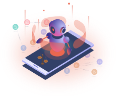
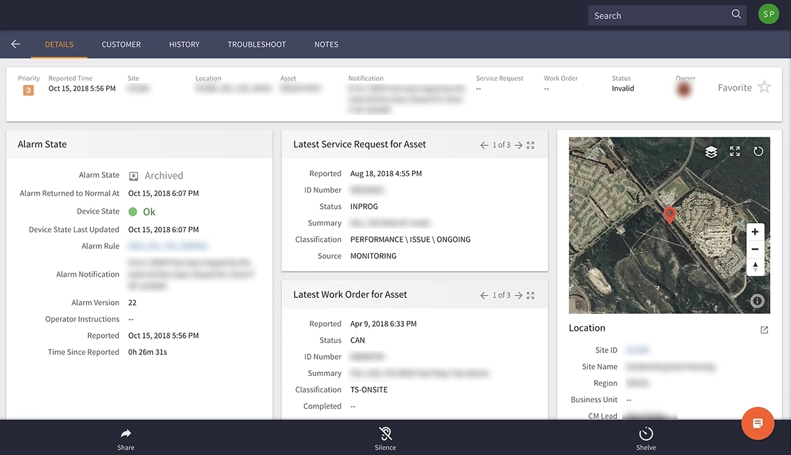
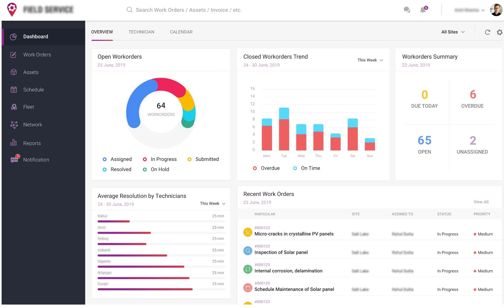
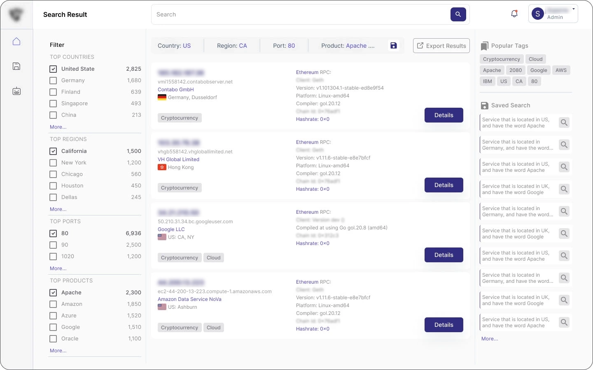
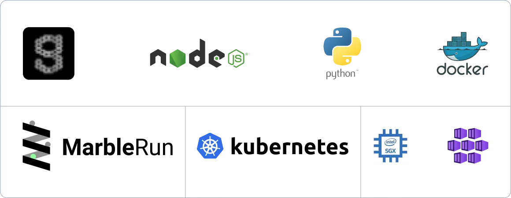
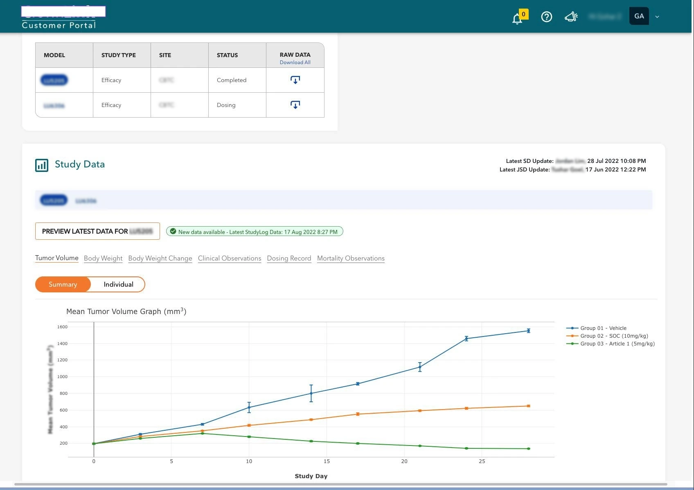

SVC-01

DevSecOps Made Easy with AI
Scale faster. Deliver better.
Security and delivery folded into one pipeline: build, release, operate, and monitor without the handoff friction.
Explore→Mission Brief · Est. Delaware
Enabling innovation in an AI-driven world: data platforms, secure delivery, and systems that hold up at scale.
Telemetry · Systems in Production
Section 01 · Services

Scale faster. Deliver better.
Security and delivery folded into one pipeline: build, release, operate, and monitor without the handoff friction.
Explore→Unlocking new possibilities with Gen AI
Turn scattered institutional knowledge into a single retrieval surface your people actually trust and use.
Contact Us→
Integrating analog and digital assets
Scans, drawings, PDFs, images, sensor exhaust, brought into one model of your operation and made queryable.
Contact Us→
Frontier AI on data that cannot leave
Inference and retrieval inside hardware enclaves: encrypted in use, attested, and auditable. For the data your legal team will never let you send to an API.
Explore→Prove it works. Then prove it tomorrow.
Golden sets, adversarial suites, regression gates, and production tracing, so a model swap becomes a measurement instead of a gamble.
Explore→Safe hands on your systems of record
Governed MCP servers over SAP, MAXIMO, historians, and ticketing, with authorization, audit, and writes you can reverse.
Explore→Section 02 · Portfolio
Systems designed, built, and put into production.
Section 03 · Sample Solutions
Five deployments, and what they changed for the customer.
Industrial IoT · Solar
Monitoring across 1,500 utility and commercial solar sites, processing 200,000 data points per second for real-time anomaly detection and alerting. Reporting runs through Kepware and OSI PI connectors, while free-text search and MAXIMO-enabled workflows streamline service requests and alarm management.

Fig. 01 Alarm state, service request, and site location on a single operator view.
Field Service · Utilities
Built for a leading Middle Eastern utility across 15 power plant sites, managing 500,000 assets per site. Back office and field engineers collaborate through safe work-order approval workflows, with SAP integration keeping orders and inventory synchronized, plus cost analysis and WO analytics.

Fig. 02 Work-order approval and asset detail, synchronized with SAP.
Network Security
A globally deployed monitoring solution that continuously watches the attack surface, network paths, exposed ports, and services. Real-time visibility and alerting enable swift response to potential threats, cutting the risk of outside-in attacks on critical infrastructure.

Fig. 03 Attack-surface search, faceted by country, region, port, and product.
Confidential Compute · Oil & Gas
End-to-end porting of applications, services, and compute onto confidential-compute hardware at the edge. Kubernetes orchestration and a confidential-compute service mesh underpin it; the CI/CD pipeline configures and tests inside the secure enclave, with encryption protecting code, data, and configuration.

Fig. 04 Enclave orchestration and attestation status at the edge.
Knowledge · Life Science
100,000 diverse documents consolidated into a single searchable repository. ML-driven ranking and OCR deliver accurate results across text, Word, Excel, PowerPoint, PDF, and images, while business-term-aware faceted search and user feedback keep relevance improving.

Fig. 05 Faceted search with preview, keyword highlighting, and shareable links.
Section 04 · Verified Reviews
Independently verified client reviews, served live from our Clutch profile, not testimonials we wrote about ourselves.
Section 05 · Parts Bin
Section 06 · Philosophy
Pre-flight checklist. Every item, every mission.